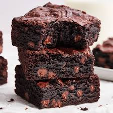

Brownie Recipe
A chocolate brownie, or simply a brownie, is a chocolate baked dessert bar. Brownies come in a variety of forms and may be either fudgy or cakey, depending on their density. Brownies often, but not always, have a glossy "skin" on their upper crust. They may also include nuts, frosting, chocolate chips, or other ingredients. A variation made with brown sugar and vanilla rather than chocolate in the batter is called a blond brownie or blondie. The brownie was developed in the United States at the end of the 19th century and popularized there during the first half of the 20th century.
Ingredients
- 1 1/2 cups granulated sugar
- 3/4 cup all-purpose flour
- 2/3 cup cocoa powder, sifted if lumpy
- 1/2 cup powdered sugar, sifted if lumpy
- 1/2 cup dark chocolate chips
- 3/4 teaspoon sea salt
- 2 large eggs
- 1/2 cup canola oil or extra-virgin olive oil
- 2 tablespoons water
- 1/2 teaspoon vanilla
Steps
- Preheat the oven to 325°F. Lightly spray an 8x8 baking dish (not a 9x9 dish or your brownies will overcook) with cooking spray and line it with parchment paper. Spray the parchment paper.
- In a medium bowl, combine the sugar, flour, cocoa powder, powdered sugar, chocolate chips, and salt.
- In a large bowl, whisk together the eggs, olive oil, water, and vanilla.
- Sprinkle the dry mix over the wet mix and stir until just combined.
- Pour the batter into the prepared pan (it'll be thick - that's ok) and use a spatula to smooth the top. Bake for 40 to 48 minutes, or until a toothpick comes out with only a few crumbs attached (note: it's better to pull the brownies out early than to leave them in too long). Cool completely before slicing.*** Store in an airtight container at room temperature for up to 3 days. These also freeze well!
Home